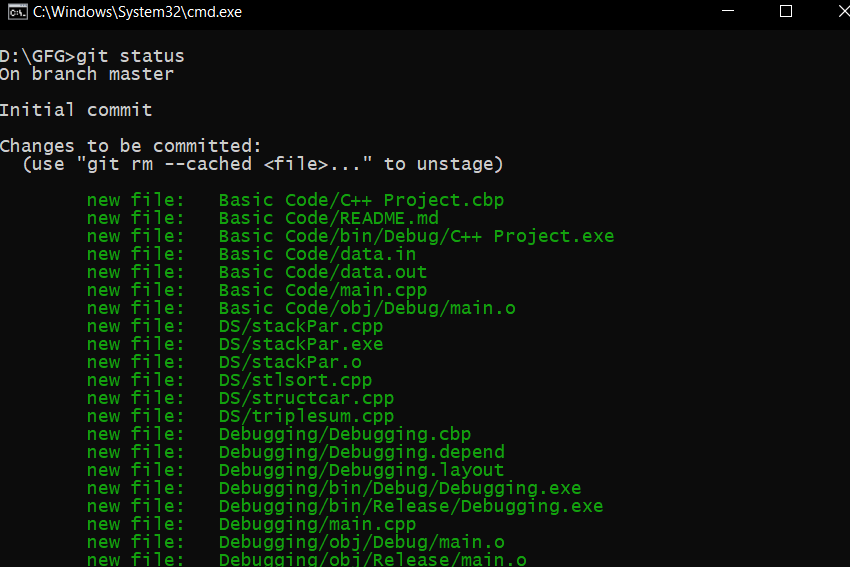
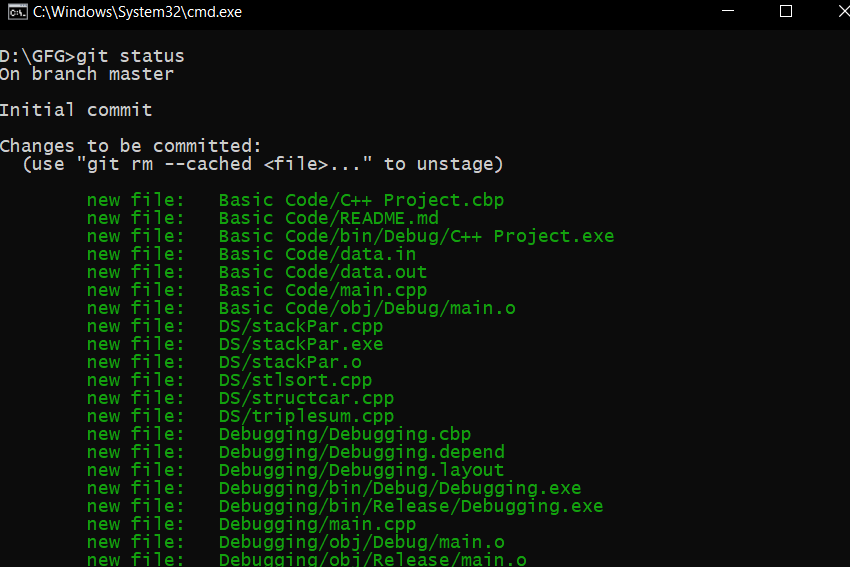

Latest published articles:

Estrutura de dados e algoritimo #2 |

Estratégia para melhorar seus commits |
Paolo Prodossimo Lopes |
(Student and Developer) |
| Position: iOS Developer @Itau Unibanco |
| Contact: paolo.prodossimo.lopes@gmail.com |
| Nationality: Brazilian |
| Gender: Male |
| Status: Unmarried |
I’m Developer focused on apple platform (iOS) with the Swift and Objective-c language. My main objective is
to create apps thinking about aesthetics, dynamics and usability, generating a great user experience through
native software tools.
• Swift 5
• Objective-c
• Swift and Objective-c animations
• Interface creation ( ViewCode, StoryBoard, XIB )
• Persistence with Core Data
• Unit Test ( XCTest, Nimble, Quick )
• Version control with Git ( GitLab, GitHub )
• Integration with API REST
• Combine
• Async (DispachQueue, DispatchGroup, DisptachSemaphore …)
• Firebase Authentication ( Email, Google, Facebook and Apple ID )
• Firebase DataBases ( Firestore, Realm DataBase, Storage )
• Analytics Tools ( Push events with google analytics and Enhanced Ecommerce )
• Dependency Manager ( CocoaPods, Swift Package )
• Debugging ( LLDB, BreakPoint (regular or conditionals), Hierarchy inspection view )
• Architectures ( MVC, MVP, MVVM, VIPER, VIP )
• Design Patterns ( Delegate, Singleton, Factory)
• S.O.L.I.D.
• Clean Code
| Position: iOS Engeneer | At: Itau Unibanco | Duration: at moment |
| At: Santander | Duration: from 04/2021 to 09/2021 |
| Language: Portuguese with native proficiency. |
| Language: English with advanced proficiency. |
| Language: Spanish with intermediate proficiency. |
| Computer Science | At: FEI University Center | Duration: at moment |
|
Estrutura de dados e algoritimo #2 |

Estratégia para melhorar seus commits |